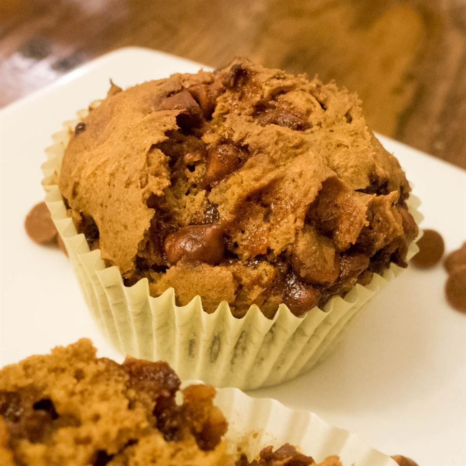

Pumpkin Spice Muffin

Description
Rich, moist, and spicy flavored muffin. Great for breakfast, brunch, or dessert!
Ingredients
- 1 (18.25 ounce) package spice cake mix
- 1 (15 ounce) can pumpkin puree
- 9 ounces cinnamon chips
- 1 cup chopped pecans (Optional)
Steps
- Preheat oven to 375 degrees F (190 degrees C). Line 18 muffin cups with paper liners.
- Mix spice cake mix, pumpkin puree, and cinnamon chips together in a bowl until cake mix is completely moistened; add nuts and stir. Spoon the batter into prepared muffin cups to about 2/3-full.
- Bake in the preheated oven until a toothpick inserted into the center comes out clean, 25 to 30 minutes. Cool in the pans for 10 minutes before removing to cool completely on a wire rack.